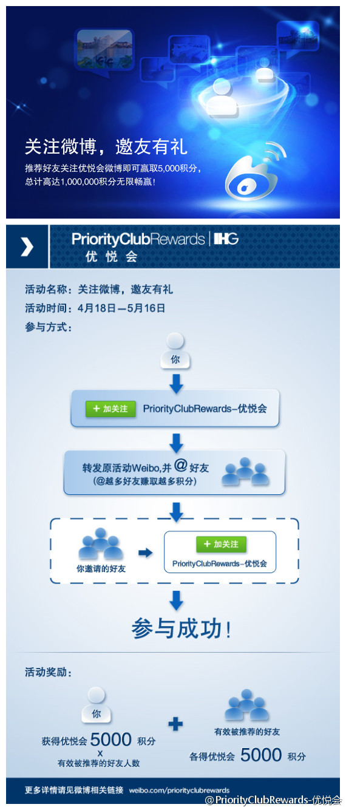

架构师沙龙的PPT已经可以下载。@jackbillow 网页链接 @贺辉群DavidHe 网页链接 @品友互动 网页链接 //活动时间: 2012年4月27日(星期五), 下午1:30-4:30 , 活动网址: 网页链接 - 原文地址：网页链接
西安的高校很多，不知道西安OpenParty是否欢迎学生群体？@西安Openparty:5月5日，13:30 ~ 16:30, 高新区锦业一路软件园H座15层 @ThoughtWorks西安 西安OpenParty 5月活动《移动新天地》 @葡萄城西安 @OpenPartyChengdu @BeijingOpenParty @Ada李力 详情：网页链接
支持。//@考古木工: @PriorityClubRewards-优悦会 我怀疑你有通过微博诈骗的嫌疑，如果你不能给出合理解释我将举报。 理由很简单，技术上讲，你根本无法判定和关联新浪微博博主和你的优悦会成员的身份，你如何给每个人加上5000分。你这样大肆散发就是一种欺骗，而且涉及大公司信誉。号召转发。@IHGRewardsClub-优悦会:#关注微博，邀友有礼# 百万积分大悬赏！5月16日前，转发本条微博并@你的好友（可多人），好友成功关注@PriorityClubRewards-优悦会 微博后，你和好友即有机会各赢5,000积分。推荐越多赚取更多，畅赢积分无上限！丰厚积分史无前例大分享，让你与亲朋好友同享更多欢乐假期！网页链接 
他做这事比你晚，时间也花得多，不过宣传资料比你多多了//@大秦水手: 去年十一花了九天从北京骑到西安，本打算走之前@在西安 ，但担心先说了大话万一到不了，想着到了之后再@在西安 。十月九号到了西安，在钟楼前拍下照片写下文字，结果@in西安 .。后来发现@ 错了，想想算了吧，咱又不是为了证明啥。---:该账号因被投诉违反《微博社区公约》的相关规定，现已无法查看。查看帮助 网页链接
 网页链接 @贺辉群DavidHe 网页链接 @品友互动 网页链接 //活动时间: 2012年4月27日(星期五), 下午1:30-4:30 , 活动网址: 网页链接 - 原文地址：网页链接
网页链接 @贺辉群DavidHe 网页链接 @品友互动 网页链接 //活动时间: 2012年4月27日(星期五), 下午1:30-4:30 , 活动网址: 网页链接 - 原文地址：网页链接